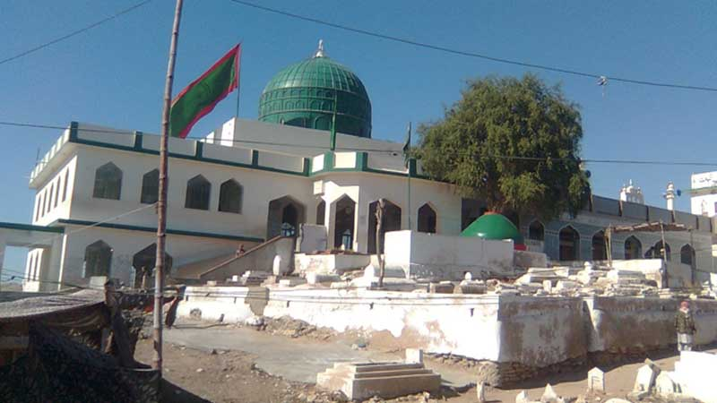

MAZAR IS ONE OF THE MOST SPIRITUAL PLACE IN THIS WORLD AND MUSLIMS VISITS MAZARS TIME TO TIME TO GET SPIRTUALITY
According to the city of Karachi's historian and architect, Suhail Lari, being the son of Muhammad al-Nafs al-Zakiyya, Abdullah Shah Ghazi was of the Ahl al-Bayt (member of the household of Muhammad). He was born in Medina in 720 and arrived in Sindh as an Arab merchant. Another noted historian, M. Daudpota, says that Ghazi came to the area from Iraq with Muhammad bin Qasim's army and took part in fighting Sindh's Hindu ruler Raja Dahir in the seventh century. Abdullah Shah Ghazi was said to have been killed by the army of Muhammad bin Qasim in a forest, with devotees returning his body to a site on the coast where he is said to have first stepped foot in Sindh. He was buried atop a hillock in Karachi along with his brother Misry Shah
 Pir Mangho was living in a place that was surrounded by crocodiles. Perhaps he even fed those animals at times. Given his influence, the locals began to see him as someone with miraculous powers of sorts, because the crocodiles weren’t scared of him. Upon his death, a shrine was built around his grave and a very odd legend was constructed by the locals. As per the legend, Pir Mangho through his special powers turned lice into crocodiles.
The shrine was originally established as a simple grave next to the mosque which Hujwiri had built on the outskirts of Lahore in the 11th century. [1] By the 13th century, the belief that the spiritual powers of great Sufi saints were attached to their burial sites was widespread in the Muslim world, [3] and so a larger shrine was built to commemorate the burial site of Hujwiri during the Mughal period. [1] The shrine complex was expanded in the 19th century, and Hujwiri's mosque rebuilt.[1]
Bibi Pāk Daman (Urdu: بی بی پاکدامن) is the mausoleum of Ruqayyah bint Ali located in Lahore, Punjab, Pakistan. [1] Legend has it that it holds the graves of six ladies from Muhammad's household (Ahl Al-Bayt). Ruqayyah bint Ali ibn Abu Talib was the daughter of Muhammad's cousin and son-in-law Ali ibn Abu Talib with his wife Sahba' bint Rabi'a al-Taghlibiyya.
Ruqayah bint Ali was the Half sister of Al-Abbas ibn Ali and also the wife of Muslim ibn Aqeel [3] (emissary of third Shi'a Imam Husayn ibn Ali to Kufah). Others are said to be Muslim ibn Aqil's sister and daughters. It is said that these ladies came here after the event of the battle of Karbala on the 10th day of the month of Muharram in 61 AH (October 10, AD 680). Bibi Pak Daman, which means the "chaste lady", is the collective name of the six ladies believed to interred at this mausoleum, though it is also (mistakenly) popularly used to refer to the personage of Ruqayyah bint Ali alone.[4] They were among the women who brought Islam to South Asia, preaching and engaging in missionary activity in the environs of Lahore. It is said that Data Ganj Bakhsh, considered a great Sufi saint of the South Asia, was himself a devotee of the Bibi Pak Daman shrine [4] and received holy knowledge from this auspicious shrine. Some scholars consider Ruqayah to have been the daughter of Sayid Ahmed Tokhta (12th century). Bibi Paak Daaman is located between Garhi Shahu and Railway Station area. The easiest way to go to Bibi Paak Daaman is from the Empress Road and from there, take the small road opposite Police Lines and then the first left-turn. Recently Government of Pakistan is considering approval of the expansion of the Bibi Pak Daman's shrine.


Shaikh Syed Abul Hassab Musa Pak Shaheed (Urdu: شيخ سيد ابوالحساب موسى پاک شهيد ) was Sufi and his mausoleum is located at Multan, Punjab, Pakistan. Shaikh Syed Abul Hassab was son of Syed Hamid Bakhsh Gilani. He was martyred in 1592 AD (1001 H) during a civil war of Langah tribe, when he received a bullet in his chest by chance.[1] His shrine is situated in historical city of Multan. Syed Musa Pak buried near Pak Gate inside the wall city of Multan, Punjab, Pakistan. The Urs of Syed Musa Pak Shaheed takes place annually at his Mausoleum in Multan.(11ve Wali Sarkar). The family of musa pak shaheed is involved in comunity welfare specially in education. The successor (Sajadanaseen) of Darbar Musa Pak (shrine) is Makhdoom Syed Abu ul Hassan Gilani.